Preface
This book contains my notes for course 60020 Simulation and Modelling by Tony Field and Giuliano Casale at Imperial College London.
This book's source can be found here. Please feel free to submit any issues / pull requests if anything is wrong or unclear.
Operational Laws
Given an arbitrary system (real, simulated, etc), if measurements can be made upon it then the 'operational laws' link these quantities together.
For example, take an "open" system (more on this later) which has arrivals entering it and completions exiting it:
Arrivals Completions
------->(System)---------->
For an amount of time \( T \), let:
- \( A \) represent the number of a arrivals
- \( C \) represent the number of completions
From this, we can begin to determine three relationships:
- The arrival rate is \( \lambda = {A \over T} \) (arrivals per unit time)
- The average inter-arrival time is \( \lambda^{-1} = {T \over A} \) (average amount of time between arrivals)
- The throughput (traffic rate) is \( X = {C \over T} \) (completions per unit time)
(Note that throughput can be meassured on any arc).
The Flow Balance Assumption
Typically the number of arrivals is equal to the number of completions (i.e. \( \lambda = X \)). This is the case when either the number of arrivals and completions are equal (\( A = C \)) or if their difference (\( A - C \)) is small in comparison to them. A system that is in equilibrium (or steady state) must satisfy this.
If over time (as \( T \rightarrow \infty \)) this assumption does not hold, then the system is fundamentally unstable.
Open and Closed Systems
An open system is one where jobs can flow in and out of it freely. As a result, the number of jobs in the system can vary over time.
In a closed system, the number of jobs circulating around is fixed to some value \( N \). An example of a closed system is:
*------------------*
| |
| |
| |
*---->(System)-----*
The throughput of this example system is the traffic rate on the looping (ingoing and outgoing) arc.
Resources
If a resource (server, mutex, network port, etc) is busy for a total time of \( B \), then:
- The utilisation of that resource is \( U = {B \over T} \) (the proportion of time that the resource is being used)
- The average service time of each job at the resource is \( S = {B \over C} \)
- The service rate is \( \mu = S^{-1} = {C \over B} \)
The Utilisation Law
\[ \begin{align} U &= {B \over T} \\ &= {B \over T} * {C \over C} \\ &= {B \over C} * {C \over T} \\ &= XS \end{align} \]
Since service rates are used a lot, this also comes out to \( U = {X \over \mu} \). Note that because \( B \le T \) and \( U = {B \over T} \) then \( U \le 1 \), so using \( U = {X \over \mu} \) we know that \( {X \over \mu} \le 1 \) so \(X \le \mu \). What this means is that the throughput must always be less than or equal to the service rate for the system to be stable.
Note that in the situation where the arrival rate equals the service rate (\( \lambda = \mu \)) this might seem like it would be a stable system but in general (and depending on the distributions of the inter-arrival times and service times) it is actually unstable (more on this later).
Little's Law
Given an open system, if the population of the system (\( A - C \)) was plotted over an observation period \( (0, T) \):
A - C
^ Total area = I
4|
|
3| +-----+ +---+
| | | | |
2| +-----+ +---+ +---+ +-------+ +---+
I/T- -|- - - -|- - -|- - -|- -|- - - -|- -|- - -|- - - -|- -|- -|
1|-------+ | | +-------+ +-----+ | | |
| | | | | | | | | | |
0*--------------------------------------------------------------->
0 t1 t2 t3 t4 t5 t6 t7 t8 t9 T Time
Then the total area under the graph \( I \) would be in "request-seconds". Then we have:
- The average number of jobs in the system is \( N = {I \over T} \)
- The average response time (the average time each job spends in the system) is \( R = {I \over C} \)
Using these, Little's Law can be derived:
\[ \begin{aligned} N &= {I \over T} \\ &= {I \over T} * {C \over C} \\ &= {C \over T} * {I \over C} \\ &= XR \end{aligned} \]
This means that the average number of jobs in a system is equal to the product of the throughput and the average response time.
Little's Law works on any system (or subsystem) in equilibrium. When a system is not yet under equilibrium (say, for example, the system is warming up) then it does not apply.
The Response Time Law
If a closed system has a fixed population of \( N \) users (or customers, packets, jobs, etc) working in "think/compute" mode (i.e. they have a "think time" \( Z \) between the completion of a job and the submission of the next) then this is a special case of Little's Law:
N users with think time Z
+-()-+
+ () +
*------+ .. +<-----*
| +-()-+ |
| |
| |
| |
*---->(System)-----*
Response time R
The average total time for each cycle is \( R + Z \) so from Little's Law: \( N = X * (R + Z) \) or rearranged as \( R = {N \over X} - Z \). Note this only applies for the entire closed system, any subsystem will still obey Little's Law.
Forced Flow Law
Take a system which contains multiple resources inside it and has \( C \) completions. Consider an arbitrary resource \( k \) inside the system, with \( C_k \) completions:
*------------------*
| C_k | C
--->| ... -->(k)--> ...|--->
| |
*------------------*
System
Note that \( C_k \) can be more than \( C \) if jobs go to resource \( k \) multiple times inside the system.
Let \( V_k = {C_k \over C} \) be the average number of visits each job makes to resource \( k \). Rearranging and dividing by both sides by \( T \) gives \( X_k = V_k X \), where \( X_k \) is the throughput of resource \( k \).
The Service Demand/Bottleneck Laws
Given an arbitrary node \( k \) inside an arbitrary system, the Service demand \( D_k = V_k S_k \) is the product of average number of visits \( V_k \) and the average service time \( S_k \).
If we multiply the RHS of this equation by \( X_k \over X_k \):
\[ \begin{aligned} D_k &= V_k S_k {X_k \over X_k} \\ &= \left( S_k X_k \right) \left( {V_k \over X_k} \right) \\ &= {U_k \over X} \end{aligned} \]
where X is the global throughput of the system. Rearranging gives \( U_k = D_k X \), whichs shows that every \( U_k \) and \( V_k \) is linked by the global throughput.
Bottlenecks and Throughtput Bounds
Since \( U_k = D_k X \) and \( U_k \le 1 \), then we know \( X \le {1 \over D_k} \) for every node \( k \) in the system. From this we get that \( X \le {1 \over D_max} \) where \( D_{max} \) is the maximum of \( D_k \).
In a system under heavy load we can say that \( U_{max} \approx 1 \) and \( X \approx {1 \over D_{max}} \). What this means is that \( 1 \over D_{max} \) is the upper asymptotic bound on throughput under heavy load, and the resource with the highest demand \( D_{max} \) is the bottleneck resource of the system. Note that if the system is open, then \( \lambda = X \) so we also require that \( \lambda \le {1 \over D_{max}} \) for the system to be stable.
In a system under light load jobs are never queued and so the average total time they spend at each resource \( k \) is just \( D_k \) (remember \( D_k \) is the product of the average number of visits per job and the average service time at that resource), so we can say that for the entire system the response time \( R \) is the sum of all service demands: \(R = D_1 + D_2 + ... + D_k \). In a closed system, we can apply this to the response time law:
\[ \begin{aligned} X &= {N \over (R + Z)} \\ &= {N \over (D + Z)} \end{aligned} \]
where \( D = D_1 + D_2 + ... + D_k \). This means that \( N \over (D + Z) \) is the upper asymptotic bound on throughput under light load.
Combining these two limits, we can say that in general: \( X \le min \left( {1 \over D_{max}}, {N \over (D + Z)} \right) \). Note that in an open system we say that \( Z = 0 \) but we also recognise that \( N \) is not fixed. The bound still applies, however it is not as tight as in a closed system.
When throughput is plotted against the number of jobs, it typically looks like this:

Response Time Bounds
Just like with throughput, we can calculate the bounds for response time. In a system under high load, since the throughtput is bounded by \( X \le {1 \over D_{max}} \) we know that:
\[ \begin{aligned} R &= {N \over X} - Z \\ &\le N D_{max} - Z \end{aligned} \]
In a system under low load, every job experiences the average service demand at each node without needing to queue. That means that the response time is equal to the sum of the service demands \( D \), thus \( R \ge D \).
Putting these together we get \( R \ge max \left( D, N * D_{max} - Z \right) \). When response time is plotted against number of jobs it looks like:

Performance Optimisation
Performance optitmisation means / involves:
- Understanding / modelling the system
- Finding the bottleneck node
- Fixing the bottleneck
When you fix the bottleneck you change the bounds / limits described in the previous two sections. For example, these two graphs show how optimisations can affect the shape of the throughput \( X \) or response time \( R \) against number of jobs \( N \) plots:


Traffic Equations
Consider an arbitrary system with \( n \) nodes, where each node \( k \) in \( 1 \le k \le n \) has \( C_k \) completions. When the system is at equilibrium, the number of arrivals is equal to the system to the number of completions \( A = C \), and each job arrives exactly once to the system.
Now consider two arbitrary and distinct nodes \( i \) and \( j \) where \( 1 \le i, j \le n \). Assume that a job that comletes at \( i \) has a fixed probability \( r_{ij} \) of moving to node \( j \). Then for any node \( k \), the number of completions \( C_k \) must equal the sum of:
- the number of arrivals to the system \( A \) multiplied by the probability that an arriving job will move to node \( k \) directly, denoted as \( a_k \).
- the sum of the products of every node's number of completions and probability that a job will move to \( k \) (note this includes the cyclic arc from \( k \) to \( k \)).
\[ C_k = A a_k + C_1 r_{1k} + C_2 r_{2k} + \ldots + C_n r_{nk} \]
If both sides are divided by the total number of completions in the system \( C \) we get an equation for the number of visits \(V_k = {C_k \over C} \):
\[ V_k = a_k + V_1 r_{1k} + V_2 r_{2k} + \ldots + V_n r_{nk} \]
Note that \( A = C \) hence why it disappears from \(A a_k \).
If we divide by the total time \( T \) instead, we get an equation for the node throughput \( X_k \):
\[ X_k = \gamma_k + X_1 r_{1k} + X_2 * r_{2k} + \ldots + X_n * r_{nk} \]
where \( \gamma_k = X a_k \) is the direct contribution to throughput from external arrivals.
We can now take these equations and turn them into vector equations:
\[ \vec{V} (\boldsymbol{I} - \boldsymbol{R}) = \vec{a} \] \[ \vec{X} (\boldsymbol{I} - \boldsymbol{R}) = \vec{\gamma} \]
where:
- \( \vec{V} \) is the vector of number of visits for each node.
- \( \boldsymbol{I} \) is the identity matrix.
- \( \boldsymbol{R} \) is the maxtrix of probabilities that a job goes from node \( i \) to node \( j \).
- \( \vec{\gamma} \) is the vector of direct contributions to throughput from external arrivals for each node.
Note that often we use arrival rate of node \( i \) (denoted as \( λ_i \)) instead of throughput. Since arrival rate is the same as throughput, we can write:
\[ \vec{\lambda} (\boldsymbol{I} - \boldsymbol{R}) = \vec{\gamma} \]
Poisson Processes
A Poisson arrival processes is an arrival stream where the inter-arrival times \( T \) are both independent and exponentially distributed:
\[ P(T \le t) = 1 - e^{(-\lambda t)} \]
Here, \( \lambda \) is often called the processes' "rate" parameter and is equal to the reciprocal of the average inter-arrival time.
Since the inter-arrival times are exponentially distributed, for a fixed time window the number of arrivals is poisson distributed:
\[ P(A_t = n) = {(\lambda t)^n * e^{-λt} \over n!} \]
where \( A_t \) is the number of arrivals for time interval \( t \).
Poisson processes are often an effective approximation for real world random arrival processes as arrivals are typically:
- independent to each other.
- ignorant of previous arrivals and the state of the system they are arriving at.
Properties of the Exponential Distribution
Here are three properties of the exponential distribution that will be useful to recap:
- The exponential distribution is memoryless, meaning that the future is independent to the past:
\[ \begin{aligned} P(X \le t + s | X > t) &= 1 - {P(X \gt t + s \land X \gt t) \over P(X > t)} \\ &= 1 - {P(X \gt t + s) \over P(X \gt t)} \\ &= 1 - {e^{-\lambda (t + s)} \over e^{-λt}} \\ &= 1 - {e^{-\lambda s} * e^{-\lambda t} \over e^{-\lambda t}} \\ &= 1 - e^{-\lambda s} \\ &= P(X \le s) \end{aligned} \]
- If \( X_1 \sim exp(\lambda_1) \) and \( X_2 \sim exp(\lambda_2) \) then \( min(X_1, X_2) \sim exp(\lambda_1 + \lambda_2) \):
\[ \begin{aligned} P(min(X_1, X_2) \le t) &= 1 - P(min(X_1, X_2) \gt t) \\ &= 1 - P(X_1 \gt t \land X_2 \gt t) \\ &= 1 - e^{-\lambda_1 t} e^{-\lambda_2 t} \\ &= 1 - e^{-t(\lambda_1 + \lambda_2)} \end{aligned} \]
- If \( X_1 \sim exp(\lambda_1) \) and \( X_2 \sim exp(\lambda_2) \) then
\[ \begin{aligned} P(X_1 < X_2) &= \int_0^{\infty} P(X_1 \lt X_2 | X_1 = x) * \lambda_1 * e^{-\lambda_1 x} dx \\ &= \int_0^{\infty} P(X_2 \gt x) * λ_1 * e^{-\lambda_1 * x} dx \\ &= \int_0^{\infty} e^{-\lambda_2 x} * \lambda_1 * e^{-\lambda_1 x} dx \\ &= \lambda_1 \int_0^{\infty} e^{-x(\lambda_1 + \lambda_2)} dx \\ &= \lambda_1 \left[ {-e^{-x(\lambda_1 + \lambda_2)} \over \lambda_1 + \lambda_2} \right]_0^\infty \\ &= \lambda_1 {0 - (-1) \over \lambda_1 + \lambda_2} \\ &= {\lambda_1 \over \lambda_1 + \lambda_2} \\ \end{aligned} \]
and therefore by swapping \( X_1 \) and \( X_2 \):
\[ P(X_2 < X_1) = {\lambda_2 \over \lambda_1 + \lambda_2} \]
Merging Poisson Processes
When two independent Poisson processes with rates \( λ_1 \) and \( λ_2 \) are merged together, the result is also a Poisson process with rate \( λ_1 + λ_2 \).
Proof
Let:
- \( T_1 \) and \( T_2 \) be the time until the next arrival for two Poisson processes.
- \( T \) be the time until the next arrival for the merged process.
Then we get:
\[ \begin{aligned} P(T \le t) &= P(min(T_1, T_2) \le t) \\ &= 1 - e^{-t(λ_1 + λ_2)} \end{aligned} \]
Note that this is described more in detail in the Properties of the Exponential Distribution section.
This shows that the inter-arrival times of the merged process is exponential distributed, and so the merged process is Poisson.
Generalised Merging
We can also generalise this for \( n \ge 2 \) processes. Consider a binary tree of merges. Since the output of a merge is Poisson, it can be merged with another process, thus creating a chain of merges:
()()
\/ merge
()()
\/ merge
()()
\/ merge
()
Probability of Arrival Orders
The probability that the first arrival will come from the first stream is given by:
\[ P(T_1 \lt T_2) = {\lambda_1 \over \lambda_1 + \lambda_2} \]
and likewise the probability that the first arrival is from the second stream is:
\[ P(T_2 \lt T_1) = {\lambda_2 \over \lambda_1 + \lambda_2} \]
Note that this is described more in detail in the Properties of the Exponential Distribution section.
Splitting Poisson Processes
If we split a Poisson process with rate \( \lambda \) into two streams, such that there is:
- chance \( p \) (\( 0 \le p \le 1\)) that the arrival will go to the first stream.
- chance \( 1 - p \0 that the arrival will go into the second stream.
then the resulting two processes will independent Poisson processes with rates \( \lambda p \) and \( \lambda (1 - p) \) respectively. From this we can say that:
\[ P(N_1(t) = m) = {(\lambda t p)^m * e^{-\lambda t p} \over m!} \]
and
\[ P(N_2(t) = n) = {(\lambda t (1 - p))^n * e^{-\lambda t (1 - p)} \over n!} \]
where:
- \( t \) is the time interval.
- \( N_1(t) \), \( N_2(t) \) are the number of arrivals seen at both output streams respectively during interval \( t \).
Simulation
Broadly there are three classes of simulation:
- Monte Carlo.
- Discrete time.
- Discrete event.
Monte Carlo
Run multiple 'one shot' experiments using random numbers (no state, just make random observations and repeat many times) and aggregate the results.
For example, \( \pi \) can be estimated using Monte Carlo simulation:
- Take a circle of radius \( r \) and a square with side length \( 2r \).
- Pick random points inside this shape.
- Calculate
No. in circle / No. in squareto estimate \( \pi \over 4 \) (by the ratio of the areas \( \pi r^2 \over (2 \pi)^2 \) )

Discrete-Time Simulation
Given a state transition system (e.g. nodes with arcs) take \( n \) steps randomly throught the system, moving from one state to the next in each discrete step. There may or may not be a notion of time in the discrete steps made.
For example, consider a game of Monopoly where you want to find the probability of landing on each board position in the game. This can be done by starting at GO, simulating \( n \) dice rolls, following the rules of the game (including chance and community chest cards), and counting how many times each tile is landed on.

Discrete-Event Simulation (DES)
Similar to discrete time, steps are made through a state transition system, but instead these steps are triggered by discrete events in continuous time. To do this, there is a single global clock that dictates the virtual time of the simulation. The triggering events are scheduled in order of time, and when an event occurs the global clock is updated to the timestamp of the event.
Virtual ---> Direction of time
Time
|
V
|---*------*----*--------*---*-------*------> ...
Timestamp: 0 3 8 9 19 21 28
Events can also update the state of the simulation and queue future events.
Since events don't occur in order of generation but rather in order of their randomly sampled timestamps, discrete-event simulation is therefore an asychronous model of time. Discrete-time simulation on the other hand is a synchronous model of time as events occur in order of their generation (e.g. in a Monopoly simulation, the state gets updated as soon as the dice is rolled).
In Practice
In practice a discrete-event simulation has:
- Continuous time (i.e. a floating-point number)
- A collection of variables (both discrete and continuous) that constitute the simulation state.
- A priority queue of events, ordered by their timestamp.
- A scheduler adds new events to the priority queue.
- A descheduler removes events from the priority queue.
- Measurement code will also be required to get output data from the simulation.
Evolution of Time
History <-- Virtual --> Future
Time
|
V
Event 1 Event 2
|--------------*-----------------*------------------> ...
t1 t2
| |
|<--------------->|
Δt = t2 - t1
In the diagram above, Event 1 at time \( t_1 \) schedules Event 2 at time \( t_2 \). To do this, an amount of time \( \Delta t \) is added to \( t_1 \) to get \( t_2 \). \( \Delta t \) is thus the interarrival time of the events, and so it can be modelled as a random variable. We'll need to be able to sample \( \Delta t \) by sampling its distribution (more on this later).
Discrete-Time to Discrete-Event Example
Using the Monopoly example, to change it from a discrete time simulation to a discrete event simulation we can model the move times explicitly using some random variable \( T \) with a specified distribution. Then at each move, we can add to the current time a sample of this distribution to progress through time (e.g. current time + sample of T). However if we want to simulate \( P \) players who roll their dice independently, we will need to think of a way to resolve the issue of updating time and shared resources (e.g. cards). This can be done using a sequence of move events in time order and controlled access to shared resources (e.g. via queueing).
Example of a Single-server FIFO Queue
Consider a finite single-server queue with a mean interarrival time \( \lambda \), mean service rate \( \mu \), and queue capacity of \( N \):

We can model this queue using the following graph, where the number of each state represents the length of the queue:

As shown in this diagram, two events are required to model this queue: Arrival and Completion.
The timeline priority queue will contain Arrival and Completion events. Completing each event will update the state depending on the state of the simulation, described by the following rules / pseudocode:
Let State = 0
Let N be the max queue length
Let there be a priority queue
Queue an Arrival at the start of the simulation
Get next event in queue
If the event is an Arrival:
State += 1
If State < N:
Queue a new Arrival
If State == 1:
Queue a new Completion
If the event is a Completion:
State -= 1
If State == N - 1:
Queue a new Arrival
If State > 0:
Queue a new Completion
Note that in this example the Queue steps implicitly sample the interarrival time for the specific events interarrival time distribution.

Suppose a Clear event also needs to be added, which will reset the state to \( 0 \). If the state is not equal to \( 0 \) then
Queue a Clear at the start of the simulation
If the event is a Clear:
If state > 0:
Dequeue the Completion event
If state == N:
Queue a new arrival
State = 0
Queue a new Clear

Designing a Simulation Model
This section will run through designing a simulation model step-by-step using Monopoly as an example. Note that a lot of the examples will be dependent on the simulation implementation.
1. Identify the entities
The most important entities would the player pieces. Depending on how the simulation is implemented, this could also include other things such as the board tiles (properties, jail, etc) and their cards.
2. Identify the model states
In practice, these would be the state variables of the program. In terms of the example, these could include:
- The positions of player pieces.
- The amount of money each player has.
- Who owns which properties.
- The buildings on each tile.
3. Identify the types of events
Events are what trigger state transitions, such as:
- Moving from dice rolls.
- Chance and community chest cards.
- Go to jail tile.
Note that some events can be parameterisable.
4. For each event...
i. Specify how the event changes the current state of the system
- Rolling the dice will move a pieces position.
- A piece that lands on a property owned by another player will cause them to pay rent.
- Picking a card could cause a variety of other changes.
ii. Identify which new events need to be scheduled
- Rolling the dice will queue another dice roll for the next player.
5. Write code to perform measurements
- Counting the number of times each property is landed on.
- Counting how much rent is collected at each property.
6. Output the measurement results at the end of the simulation.
Could be in the form of raw data and/or graphs.
Confidence Intervals
Given \( n \) observations \( X_i, 1 \le i \le n \) for an unknown mean \( \mu \), the \( 100 \alpha \% \) confidence interval for \( \mu \) is given by:
\[ \overline{X} \pm {t_{n - 1, 1 - \alpha / 2} * S \over \sqrt{n}} \]
where \( t_{n - 1, 1 - \alpha / 2} \) is the result given by the t-distribution with \( n-1 \) degrees of freedom and a tail area of \( 1 - \alpha / 2 \). This confidence interval is exact (not an approximation) if:
\[ P \left( \overline{X} - {t_{n - 1, 1 - \alpha / 2} * S \over \sqrt{n}} \le \mu \le \overline{X} + {t_{n - 1, 1 - \alpha / 2} * S \over \sqrt{n}} \right) = \alpha \]
In practice, the confidence interval is typically an approximate because of one or more of the following reasons:
- \( n \) is too small (note that being too "small" depends on the distribution of the measurements).
- \( n \) is small and the measurements \( X_i \) are not normally distributed.
- The measurements \( X_i \) are not independent of each other.
Independent Measuring
To ensure that the measurements \( X_i \) are made independently, they can be made by running \( n \) independent replications (simulations).
Another method would be to run a single simulation to the point of (approximate) equilibrium, running back-to-back fixed time batches of measurements, resetting the measurements made at the end of each epoch:
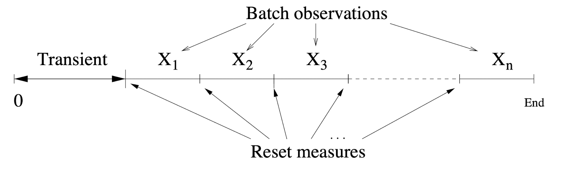
where measurement \( X_i \) is the measurement made from batch \( i \). If \( X_i \) is also a mean, then this is called the batched means method. However, an issue with this method is that sequential measurements \( X_i \) and \( X_{i + 1} \) may be dependent if the simulation enters some edge case state.
Dealing with Dependent Measurements
If the measurements \( X_i \) are dependent, then the covariances must be taken into account to build an exact confidence interval. Looking back at the previous confidence interval, this makes the following assumption:
\[ VAR \left( \overline{X} \right) = {\sigma^2 \over n} + {1 \over n^2} \left[ 2 \sum_{i=1}^{n-1} \sum_{j=i+1}^{n} Cov(X_i, X_j) \right] \]
Since covariances are typically positive, then the variance estimate \( S^2 \over n \) will become an under-estimate of the actual variance \( VAR \left( \overline{X} \right) \). This means that the computed confidence intervals are narrower than they should be.
Bounding the Error from Simulations
The simulaton run length and/or number of observations collected could be adjusted to make the confidence interval half width less than or equal to some small percentage of the sample mean. That is:
\[ h \le c \overline{X} \]
where:
- \( h \) is the confidence interval half width of the collected data.
- \( c \) is some fixed small percentage.
This is done by:
- Fixing \( c \) to the desired accuracy level, for example \( 10 \% \).
- Run the simulation to obtain \( n \) independent (and if \( n \) is small, approximately normally-distributed) observations \( X_1, X_2, ... , X_n \).
- Compute \( \overline{X} \) and \( S \), then use these values to compute the half width of the \(100 \alpha \% \) confidence interval \( h \):
\[ h = {t_{n - 1,1 - \alpha / 2} * S \over \sqrt{n}} \]
- If \( h \gt c \overline{X} \) then increase the observation period and/or the number of replications (independent simulations) and repeat the experiment.
Since this is a feedback loop until a certain threshold is reached, this process can clearly be automated.
State Space Coverage
Take some arbitrary model and consider its underlying state space/transition system:
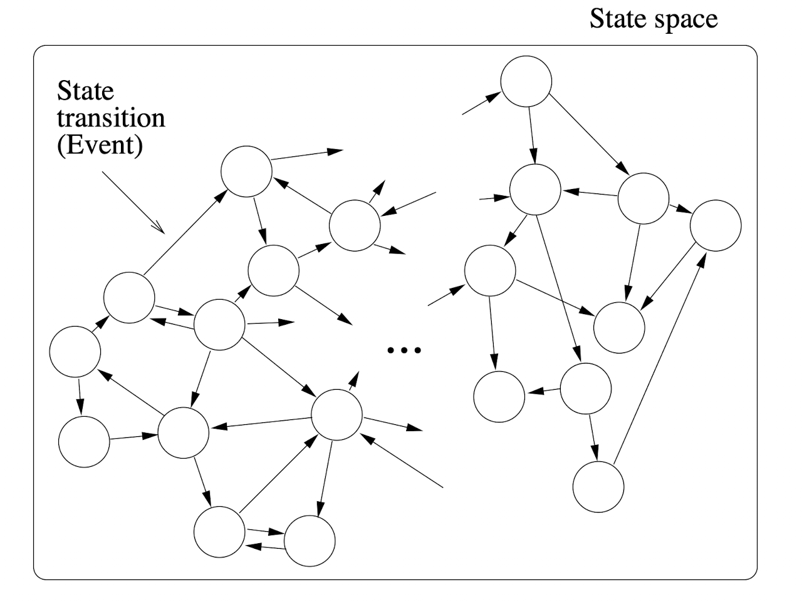
Assume that a simulation for this model is run for time \( T \) at (approximate) equilibrium and for every state \( s \) the time spent in state \( s \) is \( T_s \). This can be used to approximate the probability \( p_s \) of being in state \( s \):
\[ \hat{p}_s = {T_s \over T} \]
Note that measures such as the waiting time \( W \) can either be calculated directly or in terms of \( \hat{p}_s \) using Little's Law; the answers will be the same.
The quality of the estimate \( \hat{p}_s \) clearly depends on \( T \), but it also depends on the distribution of \( p_s \) where \( s \in S \):
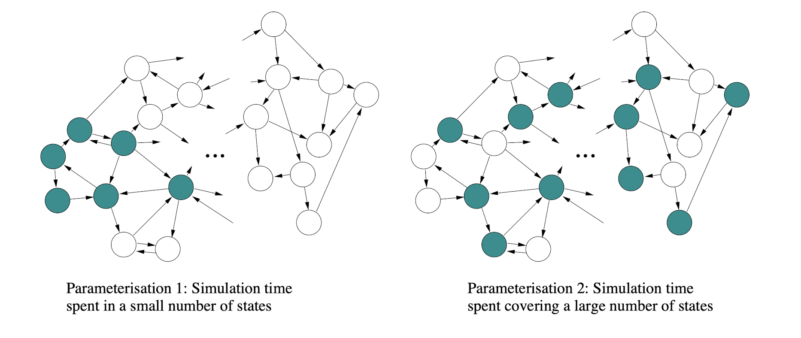
In this diagram, the coloured states are the largest subset of states \( S' \subseteq S \) such that:
\[ inf \{ p_i | i \in S' \} \ge sup \{ p_j | j \in S - S' \} \]
and
\[ \sum_{i \in S'} p_i \le p_{max} \]
for some \( p_{max} \). These two equations simply split the states into two sets, where \( S' \) contains the highest probability states and \( S - S' \) contains the lowest probability states, and this split is defined by the parameter \( p_{max} \).
The left model shows a system under light load, whereas the right model show a system under heavy load. The confidence interval for the left model will be narrower than the right.
Distribution Sampling
To be able to simulate models, the simulations have to be able to sample the underlying probability distributions. There are four commonly-used methods to do this:
- Inverse transform method.
- Acceptance-Rejection (AR) method.
- Convolution method.
- Composition method.
Inverse Transform Method
Assume that the goal is to sample the continuous random variable \( X \), which has a c.d.f \( F(x) = P(X \le x) \). Since \( F(x) \) is a c.d.f, there are a couple of properties to note:
- \(0 \le F(x) \le 1 \)
- \( F(x) \) increases monotonically (i.e. at all points it is increasing in value).
As a result, if we let \( U \sim U(0, 1) \) then we get:
\[ \begin{align} P \left( X \le x \right) &= P \left( F^{-1} (U) \le x \right) \\ &= P \left( U \le F(x) \right) \\ &= F(x) \end{align} \]
This demonstates that if \( F^{-1}(x) \) exists, then by setting \( F(X) \) (notice how it's \( X \) not \( x \) as we are dealing with sampling the random variable) equal to the uniform random variable \( 0 \le U \le 1 \) we can manipulate the equation to get \( X \) in terms of \( U \).
Example 1
If \( X \sim U(a,b) \) then:
\[ F(x) = {x - a \over b - a}, \quad a \le x \le b \]
From setting \( U = F(X) \) and inverting \( F \) we get:
\[ \begin{align} U &= F(X) \\ U &= {X - a \over b - a} \\ X - a &= U * (b - a) \\ X &= U * (b - a) + a \end{align} \]
This also matches what we'd expect intuitively: \( U \sim U(0,1) \) so \( U * (b - a) + a \sim U(a,b) \).
Example 2
If \( X \sim exp(\lambda) \) Then
\[ F(x) = 1 - e^{-\lambda x}, \quad X \ge 0 \]
From setting \( U = F(X) \) and inverting \( F \) we get:
\[ \begin{align} U &= 1 - e^{-\lambda X} \\ 1 - U &= e^{-\lambda X} \\ log_e(1 - U) &= -\lambda X \\ {-log_e(1 - U) \over \lambda} &= X \end{align} \]
As a result, if \( U \sim U(0,1) \) then \( -log_e(1 - U) / \lambda \sim exp(\lambda) \). Notice that we can also replace \( 1 - U \) with \( U \) as \( 1 - U \sim U(0,1) \) as well. This means that \(-log_e(U) / \lambda \sim exp(\lambda) \).
Acceptance-Rejection (AR) Method
If the c.d.f \( F(x) \) cannot be inverted then we can sometimes use the p.d.f \( f(x) \) instead.
Firstly, find a function \( h(x) \) which dominates \( f(x) \), meaning \( h(x) \ge f(x) \) for all \( x \). Then generate a density function \( g(x) \) by "normalising" \( h(x) \) so that the area under \( g(x) \) is equal to \( 1 \):
\[ \int_x h(x) dx = c \implies g(x) = {h(x) \over c} \]
Thus, the c.d.f is given by:
\[ \begin{align} G(x) &= \int_{-\infty}^{x} g(t)dt \\ &= \int_{-\infty}^{x} {h(t) \over c} dt \end{align} \]
\( g(x) \) and/or \( G(x) \) need to be easy to sample for this method to work.
An alternative method is starting with some p.d.f \( g(x) \) and scaling it by a factor \( c \) to get a function \( h(x) \) which dominates \( f(x) \):
\[ \begin{align} c &= c \int_x g(x) dx \\ &= \int_x h(x) dx \end{align} \]
AR Algorithm
- Let \( X \) be a sample from \( g(x) \) or \( G(x) \).
- Let \( U \) be a sample from the \( U(0, 1) \) distribution and let \( Y = U * h(X) \).
- If \( Y \le f(X) \) then accept \( X \), otherwise reject it and start over.
Note that \( Y \le f(x) \) can also be rewritten as:
\[ U \le {f(X) \over h(X)} = {f(X) \over c * g(X)} \]
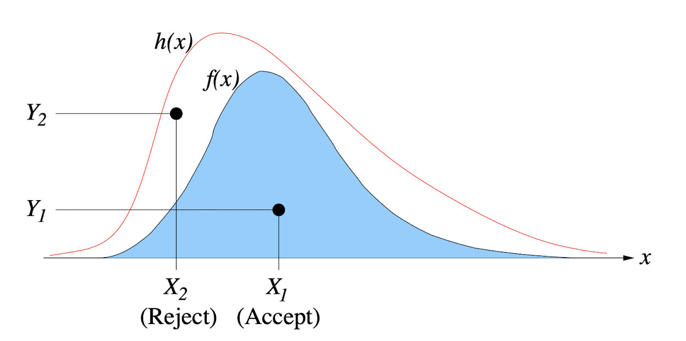
Example
Take a standard "half-normal" distribution (the standard normal distribution, but cut in half by taking only positive values of \( x \)):
\[ f(x) = {2 \over \sqrt{2 \pi}} e^{-x^2/2} \]
Note that the \( 2 \) on top of the fraction is because a half normal has the area of \( 1 / 2 \), so it's multiplied by \( 2 \) to make it a valid p.d.f.
Now take an arbitrary p.d.f, say \( g(x) = e^{x} \) (an exponential with parameter 1) as it is easy to sample. To calculate \( h(x) = c * g(x) \) such that it dominates \( f(x) \), \( c \) needs to be computed. Firstly find:
\[ \max_x {f(x) \over g(x)} \]
by finding:
\[ \begin{align} c &= \max_{x \ge 0} {{2 \over \sqrt{2 \pi}} e^{-x^2 / 2} \over e^{-x}} \\ &= \max_{x \ge 0} \sqrt{2 \over \pi} e^{x - x^2 / 2} \end{align} \]
Through differentiation, the maximum of this equation is when \( x = 1 \) so:
\[ \begin{align} c &= \sqrt{2 \over \pi} e^{1/2} \\ &= \sqrt{2e \over \pi} \end{align} \]
and from this we get:
\[ h(x) = \sqrt{2e \over \pi} e^{-x} \\ {f(x) \over h(x)} = e^{-{1 \over 2}(x - 1)^2} \]
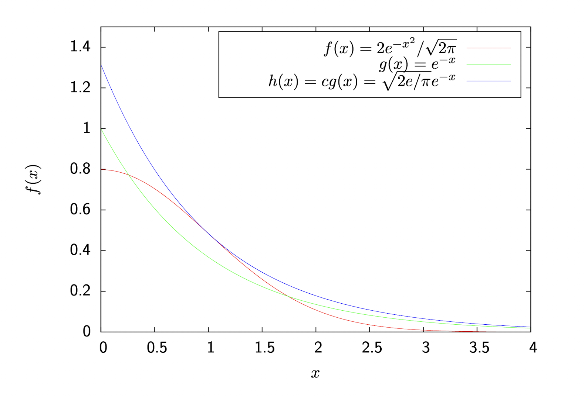
Using this, we can sample \( X \) from \( -\ln(1 - U_1) \) (found using the inverse transform method applied to the exponential distribution with parameter \( 1 \)) and accept \( X \) iff:
\[ U_2 \le {f(X) \over h(X)} = e^{-{1 \over 2}(X-1)^2} \]
where \( U_1,U_2 \sim U(0, 1) \).
Special Case
If \( a \le x \le b \) then we can bound \( f(x) \) within a rectangle using \( U(a,b) \). Let \( g(x) = {1 \over (b-a)} \) and \( h(x) = \max_x f(x) = m \). Then, sample \( X \) from \( U_1 * (b - a) + a \) and accept \( X \) iff:
\[ U_2 \le {f(X) \over h(X)} = {f(X) \over m} \]
where \( U_1, U_2 \sim U(0,1) \).
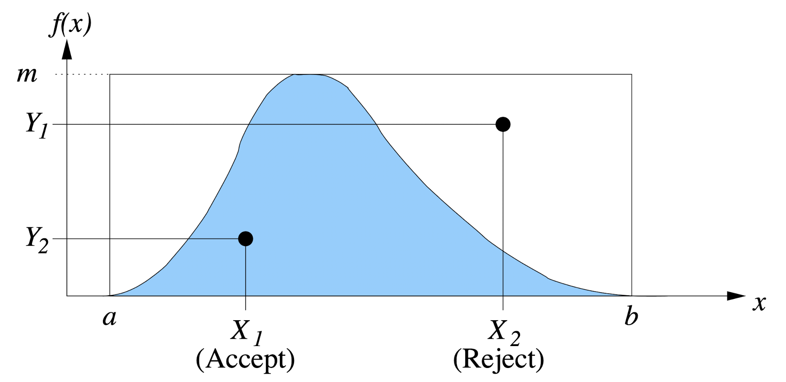
Proof
To prove this, we need to show that the values of \( X \) that are accepted have a c.d.f equal to \( F \):
\[ P \left( X \le x \mid U \le {f(X) \over h(X)} \right) = F(x) \]
This is done by the following proof (remember that \( X \) has the density function \( g(X) \) and \( h(x) = c * g(x) \)):
\[ \begin{align} P \left( X \le x \mid U \le {f(X) \over h(X)} \right) &= {P \left( U \le {f(X) \over c * g(X)} \land X \le x \right) \over P \left( U \le {f(X) \over c * g(X)} \right)} \\ &= {\int_0^x P \left( U \le {f(X) \over c * g(X)} \mid X = y \le x \right) g(y) dy \over {1 \over c} } \\ &= c \int_0^x {f(y) \over c * g(y)} g(y) dy \\ &= \int_0^x f(y) dy \\ &= F(x) \end{align} \]
Efficiency
The efficiency of a particular dominating function depends on the number of rejections \( R \) before accepting a value of \( X \). The probability \( p \) of accepting a value of \( X \) in any single experiment is equal to the ratio of the areas of the two functions, \( f(x) \) and \( h(x) \). This is equal to \( 1 \over c \), and since each experiment is independent then this means \( R \) is geometrically distributed:
\[ P(R = r) = p(1 - p)^r \]
so the expected number of rejections is given by:
\[ \begin{align} E(R) &= {1 - p \over p} \\ &= c - 1 \end{align} \]
and since the next iteration should give be accepted, this gives the average number of iterations as simply \( c \). This value can be used to approximate the number of random numbers needed to sample a distribution. For example, in the half-normal example:
\[ c = \sqrt{2e \over \pi} = 1.315 \]
and each iteration needs two random \( U(0, 1) \) samples, so that is an average \( 2 * 1.315 = 2.63 \) samples per sample of \( X \).
Convolution Method
A distribution is a convolution of other distributions is it is the sum of their individual random variables. This sum can be weighted.
Example
An \( Erlang(k, \theta) \) random variable is defined as the sum of \( k \) random variables, each following an \( exp(\theta) \) distribution.
The expected value is given by:
\[ E(X) = {1 \over \theta} + {1 \over \theta} + \dots + {1 \over \theta} = {k \over \theta} \]
Therefore, we can generate samples for an \( Erlang(k, \theta) \) random variable using the inverse transform technique on the exponential distribution. If \( X_i \sim exp(\theta) \):
\[ X = \sum_{i = 1}^k X_i \sim Erlang(k, \theta) \]
Additionally, if \( U_i \sim U(0, 1) \) then \( X_i \) is sampled using:
\[ -\ln{U_i \over \theta} \]
Calculating the logarithm of a value can be quite computationally expensive, so we can manipulate the result from a summation to a product:
\[ \begin{align} X &= \sum_{i = 1}^k - {\ln{U_i} \over \theta} \\ &= - {1 \over \theta} \ln \prod_{i = 1}^k U_i \end{align} \]
Sampling Discrete Distributions
Once again, we can apply the inverse transform method by finding the inverse of the c.d.f.
Take an arbitrary random variable \( X \); its c.d.f will be a "step function":
F(x)
^
*---*--------*------* 1.00 | +---+
| x | P(X=x) | F(x) | 0.81 | +---+ |
*---*--------*------* 0.66 | +---+ | |
| 0 | 0.15 | 0.15 | | | | | |
| 1 | 0.24 | 0.39 | 0.39 | +---+ | | |
| 2 | 0.22 | 0.61 | | | | | | |
| 3 | 0.20 | 0.81 | 0.15 +---+ | | | |
| 4 | 0.19 | 1.00 | | | | | | |
*---*--------*------* +---+---+---+---+---+--->
0 1 2 3 4 x
Thus, take a uniform random variable \( U \sim U(0, 1) \), then the inverse transform method gives us:
\[ X = \min \{ x : F(x) \ge U \} \]
In practice, this can be done by simply looking up the which value in the c.d.f is greater than \( U \):
Sample U from U(0, 1)
For each x:
If U <= F(x):
Return x
Sampling in Constant Time (Alias Method)
The previous solution runs in \( O(n) \), but it is possible to sample the distribution in \( O(1) \). The idea is to convert the p.d.f, which looks like this
f(x) ^
| +---+
| | | +---+
| | +---+ |
| | | | +---+
+---+ | | | |
| | | | | |
| | | | | |
+---+---+---+---+---+-->
0 1 2 3 4 x
into something that looks like this:
^
|
|
1/n +---+---+---+---+---+
| | | | +---+
+---+ | | | |
| | | | | |
| | | | | |
+---+---+---+---+---+-->
0 1 2 3 4 x
where \( 1 \over n \) is the average height of each column. Note that in this diagram, each "block" no longer corresponds to the horizontal coordinate of the graph.
Construction Algorithm
This rectangle can be constructed by breaking up columns that exist above the average height \( m \) into smaller chunks, then putting all of these smaller chunks back together.
Caluclate m
Let smaller be the set of tuples (x, p) where p = p(x) and p <= m
Let larger be the set of tuples (x, p) where p = p(x) and p > m
Let result be an empty list of tuples (x1, x2, alias)
For each column in the output result:
Pop (x1, p1) from the smaller set
Pop (x2, p2) from the larger set
Let (x3, p3) = (x2, p2 - p1)
Let result[column] = (p1, x1, x2)
If p3 <= m:
Push (x3, p3) to smaller
Else:
Push (x3, p3) to larger
Note the algorithm above is simplified just to convey the general idea (i.e. it doesn't handle the case where \( p(x) = {1 \over n} \)).
Sampling Algorithm
To sample this new graph, two uniform random numbers will be needed:
- \( U_1 \sim U(0,4) \) is a discrete random variable which will pick which column is to be sampled.
- \( U_2 \sim U(0, m) \) is a continuous random variable which will decide which chunk of the column is chosen.
Then, using the list result from the construction algorithm:
Let u1 be a sample from U1
Let u2 be a sample from U2
Let (x1, x2, alias) = result[u1]
If u2 <= alias:
Return x1
Else:
Return x2
It is obvious that this algorithm will run in \( O(1) \) if the sampling methods for \( U_1, U_2 \) run in \( O(1) \) (which they do).
Continuous-Time Markov Chains CTMCSs
Continuous-Time Markov Chains (also known as Markov Processes (MPs) ) are a form of stochastic processes which is defined by a set of states \( S \) and a square matrix known as a transition rate matrix or generator matrix \( \boldsymbol{Q} \) with dimensions \( \lvert S \rvert \times \lvert S \rvert \). For example, a CTMC with \( 3 \) states will have the following generator matrix:
\[ \begin{bmatrix} -(q_{1,2} + q_{1,3}) & q_{1,2} & q_{1,3} \\ q_{2,1} & -(q_{2,1} + q_{2,3}) & q_{2,3} \\ q_{3,1} & q_{3,2} & -(q_{3,1} + q_{3,2}) \\ \end{bmatrix} \]
where \( q_{i, \, j} \) is the transition-rate from state \( i \) to state \( j \), \( 1 \le i, j \le \lvert S \rvert \) (more on generator matricies later).
In a CTMC there are no self-loops as they don't affect the transitions out of the system (remember that Poisson Processes are memoryless). This means that the diagonal terms \( q_{i,i} \) are effectively unused, and so they can be used for something else. By convention, the negative sum of each row is stored in the diagonals:
\[ q_{i,i} = - \sum_{j \in S, \, j \ne i} q_{i, \, j} \]
This will be useful later.
State Holding Times
Since \( q_{i, \, j} \) is the rate parameter of an exponentially distributed random variable, if \( X_{i, \, j} \sim exp(q_{i, \, j}) \) then we get the following:
\[ \begin{align} F_{i,\,j}(x) &= 1 - e^{- q_{i, \, j} x} \\ f_{i,\,j}(x) &= q_{i, \, j} e^{- q_{i, \, j} x} \end{align} \]
where \( x \ge 0 \) and \( q_{i, \, j} \ge 0 \). As a result, if there are multiple transitions out of a state, then they will "race" with each other: the first event to trigger will be the state transition taken. Thus, the state holding time is the minimum of the samples of each exponentially distributed random variable out of the current state:
\[ \begin{align} P \left( \left( \, \min_{1 \le j \le n} X_{i,\,j} \right) \le x \right) &= 1 - P \left( X_1 \gt x \land \dots \land X_n \gt x \right) \\ &= 1 - \prod_{j = 1}^n e^{-r_{i, \, j} x} \\ &= 1 - e^{-(r_{i,1} + \dots + r_{i,n}) x} \\ &= 1 - e^{q_{i,i} x} \end{align} \]
Remember that the minimum of a set of exponentially distributed random variables is also an exponentially distributed random variable (see here).
Therefore, the state holding time can be modelled by an exponentially distributed random variable with rate parameter \( q_{i, i} \).
The Markov Property
Since the state holding time is exponentially distributed, it means that it is also memoryless. As a result, the next transition in the system is determined only by the current state. If \( S(t) \in S \) is defined as the state of the process at time \( t \), then the Markov Property for \( t_1 \lt t_2 \lt \dots \lt t_n \) is defined as:
\[ P \left( S( t_n ) = s_n \mid S(t_{n-1}) = s_{n-1}, \dots , S(t_1) = s_1 \right) = P \left( S(t_n) = s_n \mid S(t_{n-1}) = s_{n-1} \right) \]
Steady-state Solution of a Markov Process
Let \( p_s(t) = P(S(t) = s) \) be the probability that at time \( t \) the current state of the process is \( s \in S \). To find the steady-state (or equilibrium) solution, we need to derive a set of linear equations that will define the convergent solution for \( p_s(t) \) as \( t \rightarrow \infty \) (also known as \( p_s \)).
There are two approaches:
- Numerical: solve the system of linear equations to calculate the steady-state probabilities.
- Analytical: for certain systems, it is possible to spot direct solutions to the linear system, which is preferable.
Once we have the steady-state probabilities of \( p_s, s \in S\), we can use it to caluclate other performance measures of the system. This can also be done numerically or analytically.
Linear Equations
Given a irreducible (also known as ergodic) CTMC, meaning every state can reach every other state, with a finite or countably infinite number of states in \( S \), then at equilibrium the probability flux of leaving any state \( s \in S \) should be equal to the probability flux coming into that state:
\[ p_i \sum_{j \in S, \, j \ne i} q_{i, \, j} = \sum_{j \in S, \, j \ne i} p_j q_{j, \, i} \]
These are known as the (Global) Balance Equations. The left-hand side is equal to the probability of leaving the state, and the right-hand side is equal to the probability of entering the state. The derivation can be found here here.
At equilibrium, a finite CTMC with a finite generator matrix will statisfy the following equation:
\[ \vec{p} \, \boldsymbol{Q} = \boldsymbol{0} \]
where \( \vec{p} = \begin{bmatrix} p_1 & p_2 & \dots & p_n \end{bmatrix} \).
Theorem
If a CTMC is finite and irreducible, then there exists a limiting distribution:
\[ \vec{p} = \lim_{t \rightarrow \infty} \vec{p}(t) \]
Solving Balance Equations
Since an irreducible CTMC will have a singular generator matrix (every row sums to \( 0 \)), no inverse matrix will exist. This means that there isn't a unique solution. However, by encoding the normalising condition:
\[ \sum_{s \in S} p_s = 1 \]
into \( \boldsymbol{Q} \), then it will become non-singular, so a unique solution for \( \vec{p} \) can be found.
To do this, pick a random column \( c, \, 1 \le c \le n \) and set all of its values to \( 1 \):
\[ \begin{bmatrix} q_{1,1} & q_{1,2} & \dots & q_{1,c-1} & 1 & q_{1, c+1} & \dots & q_{1, n} \\ q_{2,1} & q_{2,2} & \dots & q_{2,c-1} & 1 & q_{2, c+1} & \dots & q_{2, n} \\ \dots \\ q_{n,1} & q_{n,2} & \dots & q_{n,c-1} & 1 & q_{n, c+1} & \dots & q_{n, n} \end{bmatrix} = \begin{bmatrix} 0 & 0 & \dots & 0 & 1 & 0 & \dots & 0 \end{bmatrix} \ \]
where the output vector is a vector with \( n - 1 \) zeros and a single \( 1 \) in column \( c \).
Theorem
An irreducible CTMC with \( n \) states will have a generator matrix with rank \( n-1 \).
Corollary
Given an irreducible CTMC with \( n \) states, the normalised generator matrix with one column set all to \( 1 \) will be rank \( n \) and as a result it will be non-singular and invertible.
Derivation of Balance Equations
Assume the CTMC has a finite or countably infinite number of states in \( S \). Given some rate parameter \( r \), the probability that a specific number of events \( N \) occur in some time interval \( \Delta \) is given by:
\[ P(N = n) = {({r \Delta t})^n e^{-r \Delta t} \over n!} \]
as \( \Delta t \) is Poisson distributed. Also remember that the expansion of \( e^x \) is:
\[ e^x = 1 + x + {x^2 \over 2!} + {x^3 \over 3!} + \dots \]
Then the probability that there are no events be rewritten as:
\[ \begin{align} P(N = 0) &= {({r \Delta t})^0 e^{-r \Delta t} \over 0!} \\ &= e^{-r \Delta t} \\ &= 1 - r \Delta t + {(r \Delta t)^2 \over 2!} - {(r \Delta t)^3 \over 3!} + \dots \\ &= 1 - r \Delta t + o(\Delta t) \end{align} \]
where \( o(\Delta t) \) represents a summation of higher orders of \( \Delta t \) such that:
\[ \lim_{\Delta t \rightarrow 0} {o(\Delta t) \over \Delta t} = 0 \]
Similarly, the probability that there is exactly one event that occurs is:
\[ \begin{align} P(N = 1) &= (r \Delta t) e^{-r \Delta t} \\ &= r \Delta t + o(\Delta t) \end{align} \]
and the probability that more than one event occurs is:
\[ P(N \gt 1) = o(\Delta t) \]
Applying this to the CTMC transition rates, if \( X_{i, \, j} \sim exp(q_{i, \, j}), i \ne j \), the probability of there being no state transitions out of state \( i \) in a time period \( \Delta t \) is equal to:
\[ \prod_{j \in S, \, j \ne i} \left( 1 - q_{i, \, j} \Delta t + o(\Delta t) \right) = 1 - \sum_{j \in S, \, j \ne i} q_{i, \, j} \Delta t + o(\Delta t) \]
and therefore the probability of there being exactly one transition is \( q_{i, \, j} \Delta t + o(\Delta t) \) and the probability of there being more than one transition is \( o(\Delta t) \).
Combining these equations together, the probability of being in state \( i \) at time \( t + \Delta t \) is given by the sum of:
- The probability of being in state \( i \) and no transitions occuring.
- The sum of the probabilities of being in state \( j \) where \( i \ne j \) and there being one transition from state \( j \) to state \( i \).
- The sum of the probabilities of being in some arbitrary state and there being \( 2 \) or more transitions that end up in state \( i \).
Therefore:
\[ \begin{align} p_i(t + \Delta t) &= p_i(t) \left( 1 - \sum_{j \in S, \, j \ne i} q_{i, \, j} \Delta t \right) \\ & \quad + \sum_{j \in S, \, j \ne i} p_j(t) q_{j, i} \Delta t \\ & \quad + o(\Delta t) \end{align} \]
This can then be rearranged to get:
\[ {p_i(t + \Delta t) - p_i(t) \over \Delta t} = -p_i(t) \sum_{j \in S, \, j \ne i} q_{i, \, j} + \sum_{j \in S, \, j \ne i} p_j(t) q_{j, i} + {o(\Delta t) \over \Delta t} \]
Recall that this is the equation for differentiation from first principals. Thus, in the limit \( \Delta t \rightarrow 0 \):
\[ {dp_i(t) \over dt} = -p_i(t) \sum_{j \in S, \, j \ne i} q_{i, \, j} + \sum_{j \in S, \, j \ne i} p_j(t) q_{j, i} \]
If for all states \( i \in S \) there exists some limit \( p_i \) such that as \( t \rightarrow \infty, \, p_i(t) \rightarrow p_i \) (i.e. there exists a steady state probability for all states) then:
\[ \lim_{t \rightarrow \infty} {dp_i(t) \over dt} = 0 \]
which means:
\[ 0 = -p_i \sum_{j \in S, \, j \ne i} q_{i, \, j} + \sum_{j \in S, \, j \ne i} p_j q_{j, i} \\ \]
so finally we get the balance equations:
\[ p_i \sum_{j \in S, \, j \ne i} q_{i, \, j} = \sum_{j \in S, \, j \ne i} p_j q_{j, i} \]
Vector/Matrix Form
To go a step futher, remember that the diagonal entries to the generator matrix are equal to the negative sum of each row. As a result, we can rewrite the equation above:
\[ \begin{align} p_i \sum_{j \in S, \, j \ne i} q_{i, \, j} &= \sum_{j \in S, \, j \ne i} p_j q_{j, i} \\ -p_i q_{i,i} &= \sum_{j \in S, \, j \ne i} p_j q_{j, i} \\ 0 &= p_i q_{i,i} + \sum_{j \in S, \, j \ne i} p_j q_{j, i} \\ 0 &= \sum_{j \in S} p_j q_{j, i} \end{align} \]
and if we let \( \vec{p} = \begin{bmatrix} p_1 & p_2 & \dots & p_n \end{bmatrix} \) then we can then rewrite the balance equations as the following:
\[ \begin{align} \vec{p} \boldsymbol{Q} = \boldsymbol{0} \end{align} \]
Analytical Modelling: Queueing Systems
Analytical methods are used to analyze models mathematically and probabilistically.
There are three main approaches/methods to analyze a system:
- Measurement approach.
- Simulation approach.
- Analytical modelling.
Measurement Approach
Pros:
- Simple to do.
- Collected data is the ground truth (not relying on any assumptions).
- No knowledge of the system is required, and can be applied to any system.
Cons:
- Typically slow.
- Rare events may not occur during the tests.
- Takes some effort to automate the process.
- Collected results can be affected by "noise".
Simulation Approach
Pros:
- Easy to learn.
- Easy to produce/reproduce rare events and assess their impact.
- Fast enough for repeated evaluations (can typically run in minutes to hours).
Cons:
- Modelling skills are require
- Knowledge about the system is required to model it.
- Simulation software can have (many) bugs.
Analytical Modelling
Pros:
- Fast (typically within seconds to minutes).
- Helpful for optimisation-based search.
- Helpful for machine learning and probabilistic inference.
- Is typically the main method used for formally proving properties of an algorithm or of system behavior.
Cons:
- Strong modelling skills are required.
- Knowledge about the system is required to model it.
- Works better on simpler systems (e.g. single resources) compared to complex systems.
Measurement, simulation, and analytical methods are complementary and should be used together: they aren't competing alternatives.
Markovian Queueing Theory
Some Markov Processes (CTMCs) have direct analytical solutions to balance equations:
\[ \vec{p} \boldsymbol{Q} = \boldsymbol{0} \]
and these class of models are known as Marvokian Queues.
A queueing system is a single-queue system characterised by:
- \( A \): The arrival process
- \( S \): The service time distribution
- \( c \): The number of servers
- \( k \): The capacity of the queue buffer (default is \( \infty \))
- \( N \): The capacity of the job source (default is \( \infty \))
- \( d \): The scheduling discipline (default FCFS)
Kendall's Notation
Kendall's notatation \( A/S/c/k/N-d \) is used to describe a system with these parameters.
The common abbreviations for the arrival process \( A \) and the service time distribution \( S \) are:
- \( M \): "Memoryless"
- \( D \): "Deterministic" (constant)
- \( E_j \): Erlang-j distrRbuted (a sum of \( j \) exponential random variables)
- \( G \): General (arbitrary)
- \( GI \): General independent (no trends, bursts, periodicities, etc)
The common abbreviations for the discipline \( d \) are:
- FCFS: First-Come-First-Server (a FIFO buffer)
- LCFS: Last-Come-First-Server (a LIFO buffer)
- PS: Processor Sharing (equivilant to round robin as the time slice/quantum tends to 0, with zero context switching time)
- IS: Infinite Server (i.e. just a delay, no queue)
- SIRO: Service-in-Random-Order
For example, an \( M/M/1 \) queue has:
- A Poisson arrival process (inter-arrival times are exponentially distributed, and so they are memoryless)
- Exponentially distributed (again, memoryless) service times
- A single server
- First-come, first-served scheduling
The \( M/M/1 \) Queue
This is the simplest Markovian queue, and it can be modelled by a CTMC with the following state transition graph:
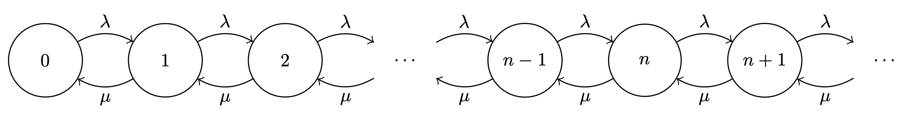
This CTMC has the following balance equations:
\[ \begin{align} \lambda p_0 &= \mu p_1 \\ (\lambda + \mu) p_n &= \lambda p_{n-1} + \mu p_{n+1}, \quad n \gt 0 \end{align} \]
where the top equation is for the edge case state \( 0 \), and the bottom equation is for every other state with two states either side of it.
Steady-state Distribution
A "analytical", or "closed-form", solution can be found by inspection. For state \( 1 \) we get:
\[ \begin{align} \mu p_1 &= \lambda p_0 \\ p_1 &= {\lambda \over \mu} p_0 \\ &= \rho p_0 \end{align} \]
where \( \rho = {\lambda \over \mu} \). This result can be used to solve state \( 2 \):
\[ \begin{align} (\lambda + \mu) p_1 &= \lambda p_0 + \mu p_2 \\ \lambda p_1 + \mu p_1 &= \mu p_1 + \mu p_2 \\ \lambda p_1 &= \mu p_2 \\ p_2 &= \rho p_1 \\ &= \rho^2 p_0 \\ \end{align} \]
Remember that \( \lambda p_0 = \mu p_1 \). We can see that this is following a trend, so for any state \( n, 0 \le n \) we get:
\[ p_n = \rho^n p_0 \]
which turns out to be the exact solution. This can be proven formally by using induction, or by showing that it satisfies the balance equations.
Finding \( p_0 \)
To find \( p_0 \), we can use the normalising equation:
\[ \sum_{n = 0}^{\infty} p_n = \sum_{n = 0}^{\infty} \rho^n p_0 = 1 \]
which is rearranged to:
\[ p_0 = \left[ \, \sum_{n = 0}^{\infty} \rho^n \right]^{-1} = 1 - \rho \]
Note that this sum only converges if \( \rho \lt 1 \) which is true only when \( \lambda \lt \mu \), hence the a system with \( \lambda = \mu \) has no solution and is unstable.
Finding \( p_n \)
By substituting the result \( p_0 = 1 - \rho \) back into the equation for \( p_n \), we get:
\[ p_n = (1 - \rho) \rho^n, \quad n \ge 0 \]
which means that the probability of being in a state \( n \) geometrically decays as \( n \) increases:
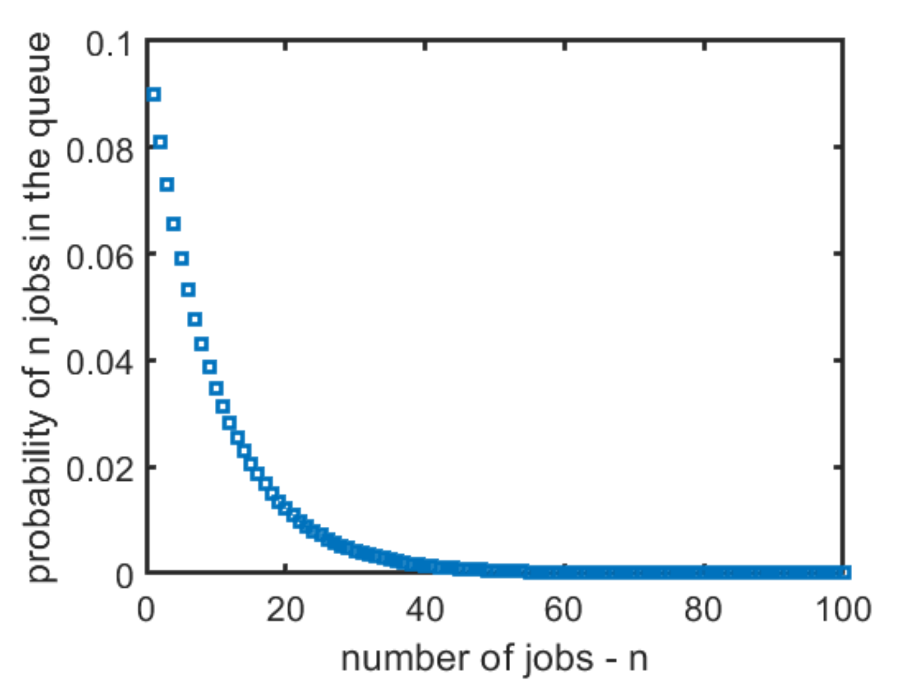
Note in this graph \( \rho = 0.8 \).
Performance Indicies
Using the previous results, we can calculate some performance indicies.
Throughtput \( X \)
When in state \( 0 \) the throughput is \( 0 \), and when in state \( n \gt 0 \) the throughput is \( \mu \).
\[ \begin{align} X &= p_0 * 0 + (1 - p_0) * \mu \\ &= \rho \mu \\ &= \lambda \end{align} \]
Server Utilisation \( U \)
The server is idle when \( n = 0 \), and is busy otherwise.
\[ \begin{align} U &= 1 - p_0 \\ &= \rho \end{align} \]
Mean Queue-length \( N \)
The population is a geometrically distributed random variable with parameter \( \rho \) (see here), so the mean population/queue-length is:
\[ \begin{align} N &= \sum_{n=0}^{\infty} n p_n \\ &= {\rho \over 1 - \rho} \\ \end{align} \]
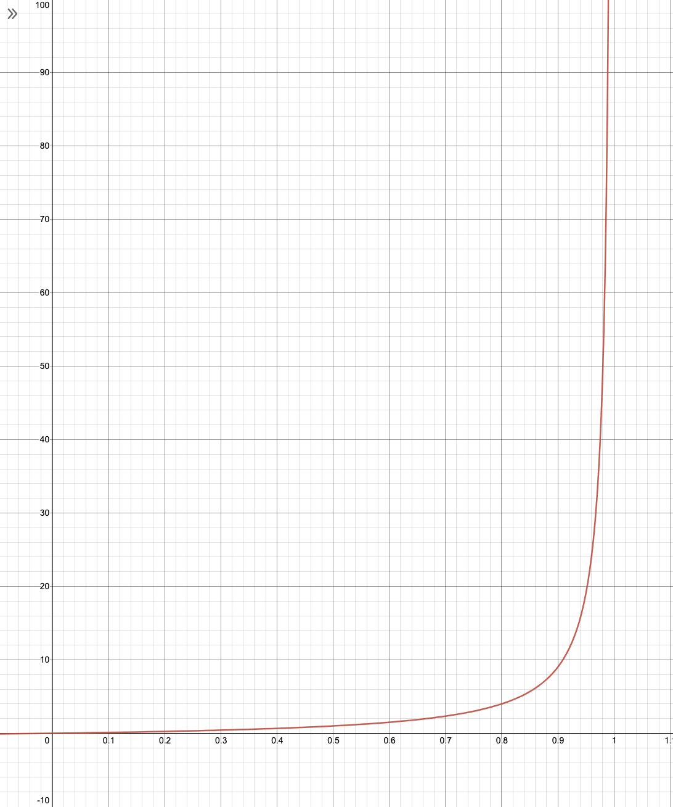
Notice how this graph has an asymptote at \( \rho = 1 \).
Mean Response Time \( R \)
Remember that the response time is equal to the mean time that a job spends inside the system (queueing time + service time). It can be found using Little's Law:
\[ \begin{align} R &= {N \over \lambda} \\ &= {1 / \mu \over 1 - \rho} \\ &= {1 \over \mu - \lambda} \end{align} \]
Mean Number Of Customers Waiting To Be Served \( N_Q \)
On average, there are \( \rho \) customers being served. Therefore, the number of customers waiting to be served is equal to:
\[ \begin{align} N_Q &= N - \rho \\ &= {\rho \over 1 - \rho} - \rho \\ &= {\rho - (1 - \rho) \rho \over 1 - \rho} \\ &= {\rho^2 \over 1 - \rho} \end{align} \]
Response Time "Knee"
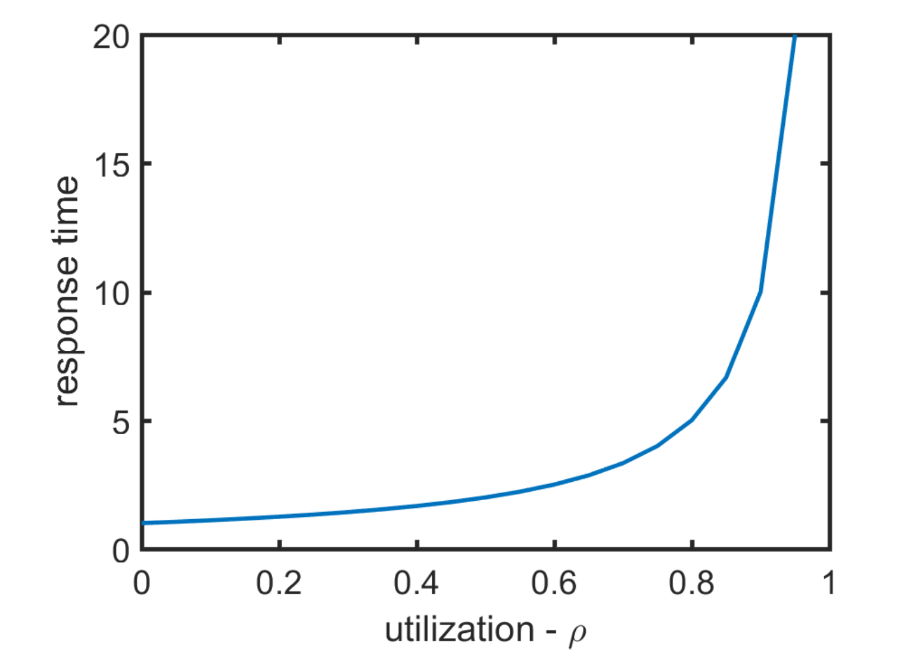
The point \( \rho = 0.7 \) is conventionally regarded as the "knee" point of this curve. If a system is above this point, it is considered to be under heavy-load.
State-dependent M/M/1 Queue
Consider a queue where the arival and service rates depend on the size of the queue:
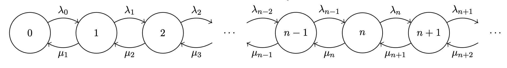
This model has the following balance equations:
\[ \begin{align} \lambda_0 p_0 &= \mu p_1 \\ (\lambda_n + \mu_n) p_n &= \lambda_{n-1} p_{n-1} + \mu_{n+1} p_{n+1}, \quad n \gt 0 \end{align} \]
Using a similar derivation to the standard \( M/M/1 \) queue we get:
\[ \begin{align} \mu_2 p_2 &= \lambda_1 p_1 \\ p_2 &= {\lambda_1 \over \mu_2} p_1 \\ &= {\lambda_0 \lambda_1 \over \mu_1 \mu_2} p_0 \\ p_n &= {\lambda_0 \dots \lambda_{n-1} \over \mu_1 \dots \mu_n} p_0 \\ &= p_0 \prod_{k=0}^{n-1} {\lambda_k \over \mu_{k+1}} \end{align} \]
and applying the normalisation condition to calculate \( p_0 \):
\[ \begin{align} \sum_{n=0}^\infty p_n &= 1 \\ p_0 + \sum_{n=1}^\infty p_0 \prod_{k=0}^{n-1} {\lambda_k \over \mu_{k+1}} &= 1 \\ p_0 + p_0 \sum_{n=1}^\infty \prod_{k=0}^{n-1} {\lambda_k \over \mu_{k+1}} &= 1 \\ p_0 &= {1 \over 1 + \sum_{n=1}^\infty \prod_{k=0}^{n-1} {\lambda_k \over \mu_{k+1}} } \end{align} \]
Multiple Parallel Servers \( M/M/c \) Queue
Consider a system with the following:
- A Poisson arrival process.
- Exponentially distributed service times.
- \( c \) parallel servers.
- First-come first-served scheduling.
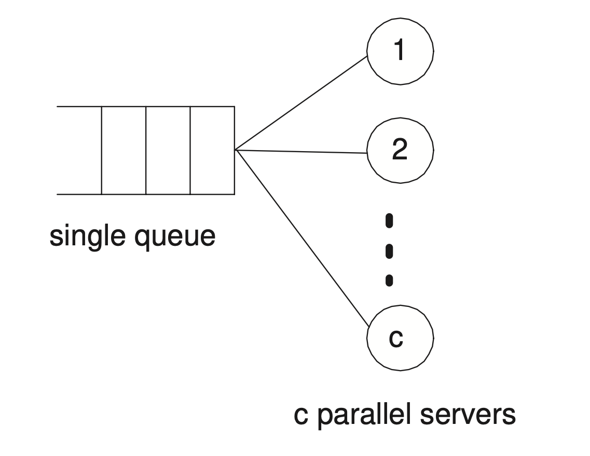
A queue like this can be modelled via the following CTMC:
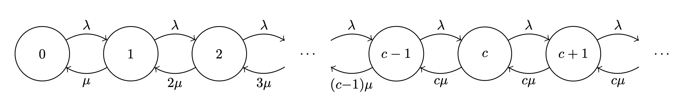
with a constant arrival rate \( \lambda_n = \lambda \) for all states \( n \ge 0 \) and a service rate that depends on the current queue population \( n \):
\[ \begin{align} \mu_n &= \min(n, c) * \mu \\ &= \begin{cases} n \mu & 1 \le n \le c - 1 \\ c \mu & n \ge c \end{cases} \end{align} \]
This means that when the queue population is less than the number of servers \( c \), the service rate increases linearly with the number of jobs, and once it exceeds this number it behaves like an \( M/M/1 \) queue with a fixed service rate of \( c \mu \).
Balance Equations
The balance equations for this model are the following:
\[ \begin{align} \lambda p_0 &= \mu p_1 \\ (\lambda + n \mu) p_n &= \lambda p_{n-1} + (n + 1) \mu p_{n+1} & 1 \le n \le c - 1 \\ (\lambda + c \mu) p_n &= \lambda p_{n-1} + c \mu p_{n+1} & n \ge c \end{align} \]
Applying the state-dependent \( M/M/1 \) formulas we get:
\[ \begin{align} p_n &= p_0 \prod_{i=1}^n {\lambda \over \mu_i} \\ &= \begin{cases} p_0 {\rho^n \over n!} & 0 \le n \le c - 1 \\ p_0 {\rho^n \over c! c^{n-c}} & n \ge c \end{cases} \end{align} \]
where \( \rho = \lambda / \mu \). Note that the denominators come from \( \mu_n = \min(n,c) * \mu \), which means:
\[ \mu_1 = \mu \quad \mu_2 = 2 \mu \quad \dots \quad \mu_{c} = c \mu \quad \mu_{c+1} = c \mu \quad \dots \]
so when they are multiplied together in a product we get:
\[ \begin{align} \prod_{i=1}^n \mu_i &= \left[ (1 \mu) (2 \mu) \dots ((c-1) \mu) (c \mu) \right] * \left[ (c \mu) \dots (c \mu) \right] \\ &= (c! \mu^c) * (c^{n-c} \mu^{n-c}) \\ &= c! c^{n-c} \mu_n \end{align} \]
Again, we can get \( p_0 \) by using the normalising condition:
\[ p_0 = {1 \over 1 + \sum_{n=1}^{c-1} {\rho^n \over n!} + {\rho^c \over (c-1)!(c-\rho)}} \]
Performance Indicies
Average Number of Busy Servers \( B \)
The average number of busy servers \( B \) is given by:
\[ \begin{align} B &= \sum_{k=1}^{c-1} k p_k + c \sum_{k=c}^\infty p_k \\ &= \dots \\ &= \rho \end{align} \]
If the system is in a steady state, then the arrival rate \( \lambda \) should be equal to the average throughput \( B \mu \), so \( B \mu = \lambda \) which means that \(B = \lambda / \mu = \rho \) which satisfies the equation above.
Utilisation \( U \)
The utilisation \( U \) is the fraction of servers that are being used, which is given by:
\[ U = {B \over c} = {\rho \over c} \]
Infinite Parallel Servers M/M/∞ Queue
Cheatsheet
Variables
Scalars
- \( A \): Number of arrivals.
- \( C \): Number of completions.
- \( T \): Amount of time (duration).
- \( \lambda \): Arrival rate.
- \( \lambda^{-1} \): Average inter-arrival time.
- \( X \): Average throughput.
- \( N \): (Average) number of jobs in the system.
- \( B \): Average busy time for a resource.
- \( U \): Average utilisation for a resource.
- \( S \): Average service time at a resource.
- \( \mu \): Average service rate.
- \( I \): "Request-seconds".
- \( R \): Average response time.
- \( Z \): Average think time.
- \( V_k \): Average number of visits at node \( k \).
- \( D_k \): Service demand.
- \( D_{max} \): The maximum service demand.
- \( D \): The sum of service demands.
- \( a_k \): The number of arrivals to the system that move to node \( k \) directly.
- \( \gamma_k \): The direct contribution to throughput for node \( k \) from external arrivals.
- \( \rho \): The ratio \( \lambda / \mu \).
Vectors/Matricies
- \( \boldsymbol{R} \): The routing matrix of probabilities that a job goes from node \( i \) to node \( j \), indexed by \( r_{i, j} \).
- \( \boldsymbol{Q} \): The square generator matrix for a CTMC, indexed by \( q_{i, \, j} \).
Functions
- \( f(x) \): Distribution p.d.f.
- \( F(x) \): Distribution c.d.f.
- \( h(x) \): A function which dominates f(x).
- \( g(x) \): h(x) but scaled such that it's total area under the curve equals 1 (p.d.f).
- \( G(x) \): The c.d.f of g(x).
- \( g(n, m) \): The normalising constant of a closed network with \( n \) jobs and \( m \) nodes.
Equations
\[ \lambda = {A \over T} \]
\[ \begin{align} X &= {C \over T} \\ &= {N \over R + Z} \\ &= {N \over D + Z} \end{align} \]
\[ \begin{align} U &= {B \over T} \\ &= XS \\ U_k &= D_k X \end{align} \]
\[ S = {B \over C} \]
\[ \begin{align} N &= XR \\ &= X * (R + Z) \\ R &= {N \over X} - Z \\ R &\le N D_{max} - Z \\ \end{align} \]
\[ V_k = {C_k \over C} \]
\[ \begin{align} D_k &= V_k S_k \\ &= {U_k \over X} \end{align} \]
\[ \gamma_k = X a_k \]
\[ \begin{align} C_k &= A a_k + C_1 r_{1, k} + C_2 r_{2, k} + \dots + C_n r_{n, k} \\ V_k &= a_k + V_1 r_{1, k} + V_2 r_{2, k} + \dots + V_n r_{n, k} \\ X_k &= \gamma_k + X_1 r_{1, k} X_2 + r_{2, k} + \dots + X_n r_{n, k} \end{align} \]
\[ \begin{align} \vec{V} (\boldsymbol{i} - \boldsymbol{R}) &= \vec{a} \\ \vec{X} (\boldsymbol{i} - \boldsymbol{R}) &= \vec{\gamma} \\ \vec{\lambda} (\boldsymbol{i} - \boldsymbol{R}) &= \vec{\gamma} \end{align} \]